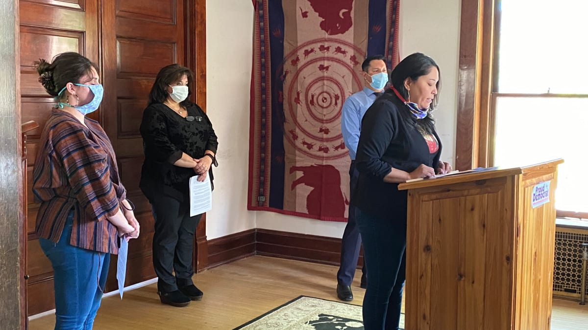
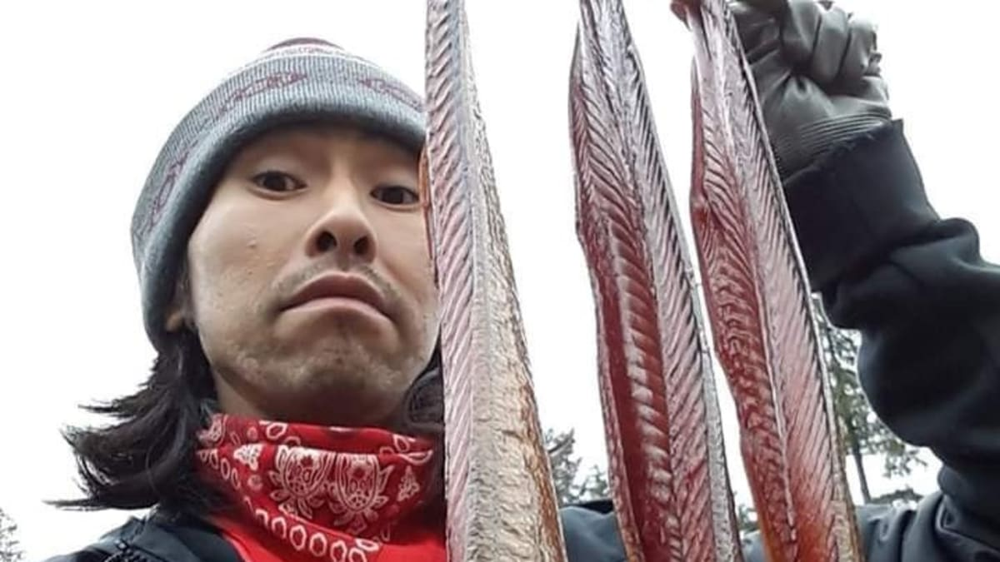

Former Second Lady Jill Biden spoke to Native leaders Tuesday afternoon affirming a commitment to “uphold tribal sovereignty” under a Joe Biden administration.
As NFL franchise seeks new name, existing sports teams show it’s possible to embrace even the quirkiest characters
Online retailer Amazon plans to remove Washington NFL franchise products from its website, joining what advocates called a “tidal wave” of momentum to get the team to change its name.
President Donald Trump tweeted his support for the Washington NFL franchise Monday, the same day more than 14 Native leaders and organizations penned a letter to NFL Commissioner Roger Goodell asking him to require the team to “immediately change” its name.
The state has not fulfilled the requirements of a 2018 ruling ordering substantial improvements to education for New Mexico children, a judge said Monday.
Native-owned reference lab has a ‘unique opportunity to help in a way that many labs cannot’
Legislative candidates Thomasina Mandan, Tracey Wilkie and Lisa Finley-DeVille, all Democrats, will advance to the general election
At least three Native candidates are running for the state Legislature in North Dakota, which has its mail-in primary Tuesday, the first statewide election since tribes reached a landmark voting rights agreement with the state earlier this year.
At least four Native candidates for Congress will advance to the general election.

Montana’s Democratic Party is hoping to grow its ranks by encouraging more Democrats to run for local offices.
When Annette Bilagody was growing up in the 1930s on the Navajo Nation, her job in her family was to repair broken necklaces. This was her first introduction to beading.

In recent days, members of the popular Facebook group Social Distance Powwow have inundated the site with uplifting messages about sober living